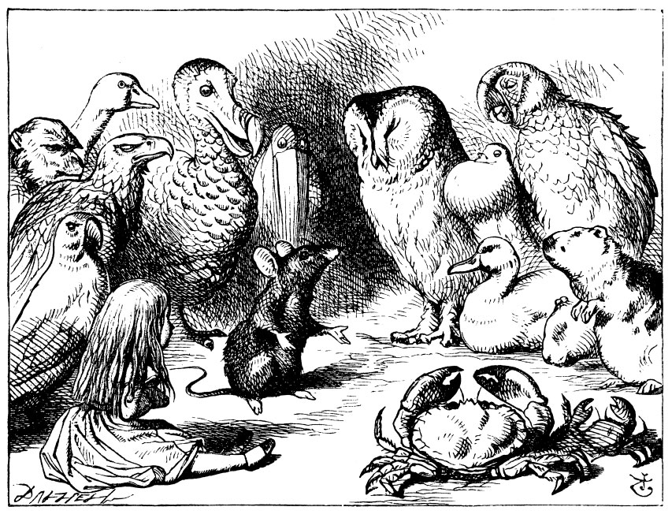

Fun Stuff
- Zuguang Gu, Circular Visualization in R,

fonts, annotations, highlights and even pictures!!
Thomas Lin Pedersen, https://www.data-imaginist.com/. The creator of ggforce, and patchwork packages.
Claus Wilke, cowplot – Streamlined plot theme and plot annotations for ggplot2, https://wilkelab.org/cowplot/index.html
Claus Wilke, Spruce up your ggplot2 visualizations with formatted text, https://clauswilke.com/talk/rstudio_conf_2020/. Slides, Code, and Video !
Robert Kabacoff, ggplot theme cheatsheet, https://rkabacoff.github.io/datavis/modifyingthemes.pdf